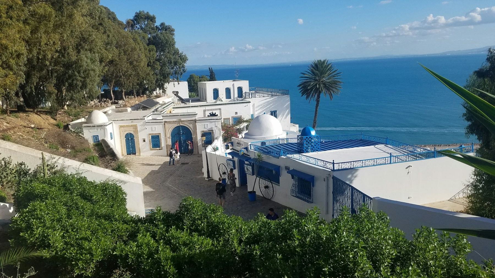
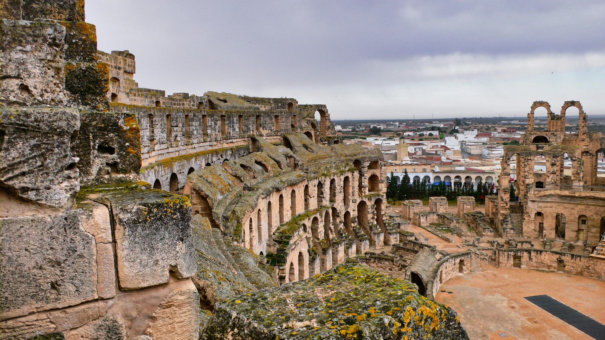
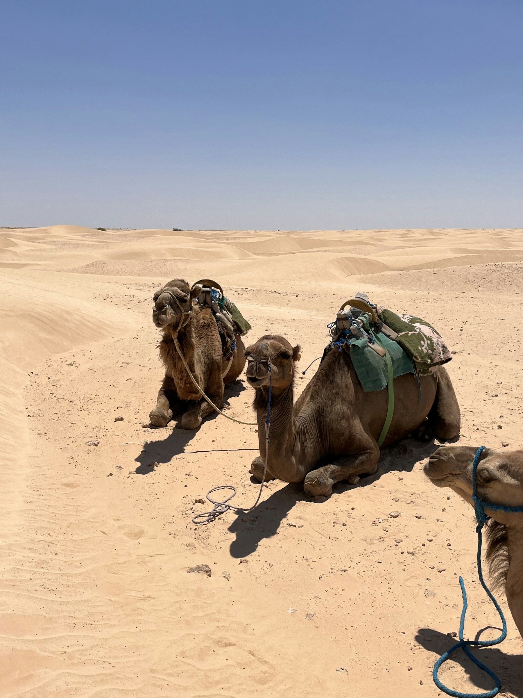
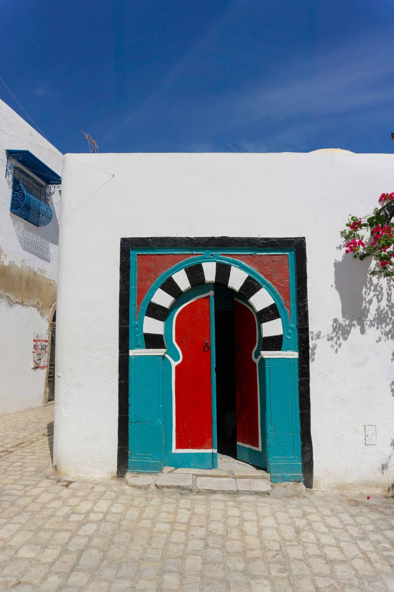
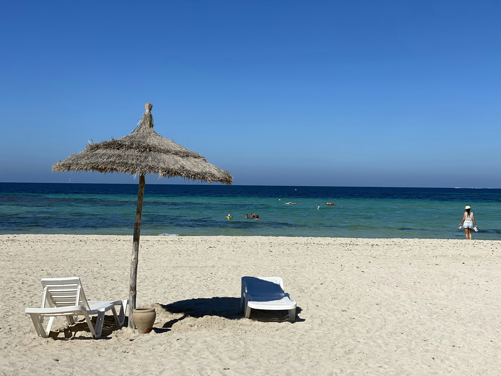
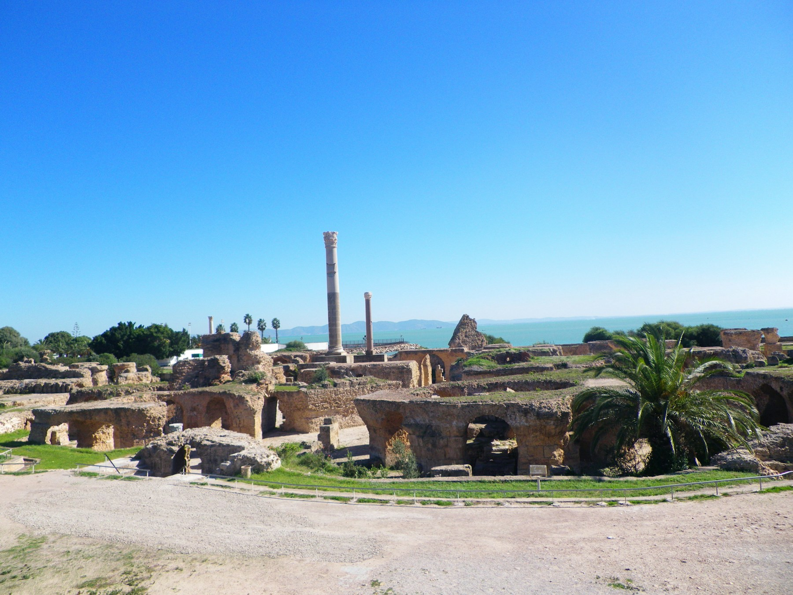

Mediterranean Coast
Enjoy seaside views, island beaches and the charm of Sidi Bou Said.

Discover Tunisia
Mediterranean shores, ancient cities and Saharan landscapes come together in a journey full of contrast.
Explore TunisiaBetween Sea and Desert
Take in the sea views and blue-and-white streets of Sidi Bou Said, then explore the historic medina of Tunis and the ancient remains of Carthage. El Jem’s amphitheatre reveals another memorable chapter of the country’s past.
Further south, Djerba invites you to slow down by the water while Douz opens the way to the Sahara. Choose the mix of coast, culture and desert that suits your travel style.
Enjoy seaside views, island beaches and the charm of Sidi Bou Said.
Discover the medina of Tunis, Carthage and the amphitheatre of El Jem.
Travel towards Douz for desert scenery and a change of pace.
Places to Experience
01

02

03

04

05

06
Your Tunisia Journey
Tell us your dates, travel style and interests. Our team will prepare a personalized Tunisia proposal.